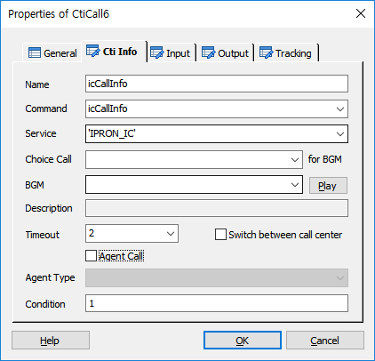
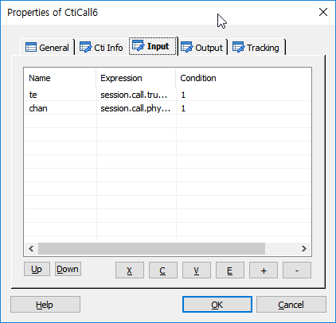
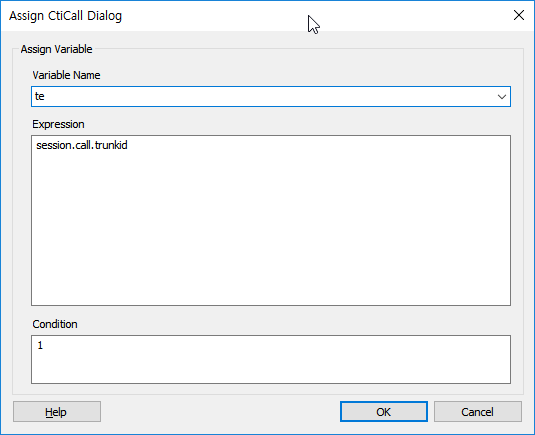
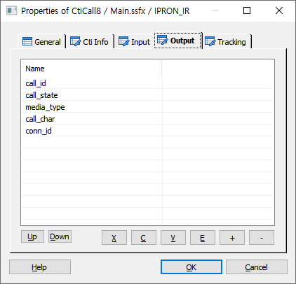
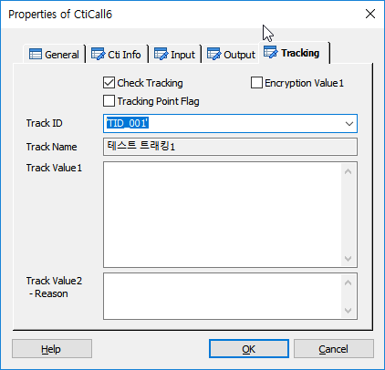

ForCu의 CB(CTI Bridge)를 통하여 Agent 및 PBX 연동을 가능하게 합니다. CTI 통신은 CI(Communication Interface)를 통해서, CB(CTI Bridge)와 연결되어 처리 됩니다.
♧ 현재 실제 통신은 CB(CTI Bridge) 와 실제 CTI M/W 사이에 API 와 CTI Event 를 처리하는 CTI Adapter 를 두고 처리 합니다.
ICON

PROPERTIES
 Cti Info
Cti Info

Name : 아이템 이름을 지정 합니다.(Cti Call 결과에 대한 변수에 접근할 때 사용)
Command : CTI 명령을 지정 합니다.(함수 호출에 대한 사용자 정의 함수 호출 명)
Service : CTI 서버 유형을 지정 합니다. CB(CTI Bridge) 에서 CTI 요청을 전송 할 때 대상(Adapter)을 찾기 위한 서버 키
Choice Call(for BGM) : Multi Call 에서 콜을 선택 합니다.(2개 콜 까지 가능, GetChannel 로 생성)
BGM : CTI 수행중 Delay 발생 할 경우 재생할 BGM을 지정 합니다.
Play Button : 지정한 BGM을 재생 합니다.
Stop Button : 재생 중인 BGM을 중단 합니다.
Description : BGM에 설명이 있다면 표시 합니다.
Timeout : CTI 수행 대기시간을 지정 합니다.(전문 응답 대기 시간)
Switch between call center Check Box : 센터간 호 전환일 경우 필요 시 체크하여 콜 처리에 사용한다.(엔진 내부에서 사용, 타센터 연동시 이벤트 전달)
Agent Call Check Box : 상담원 연결 카운트 집계를 위해서 체크한다.(하나의 콜에는 카운트가 1번만 집계된다. => v5.1 이후 : CtiCall 아이템 1회 호출 당 콜 통계 집계 1회 추가)
Agent Type : 연결 상담원 타입을 지정합니다. 상담원 연결 통계에 사용되며, Agent Call이 체크될 때만 활성화 됩니다.
Agent(상담원), Branch office agent(영업점 상담원), Reserve1(예비1), Reserve2(예비2), Reserve3(예비3)
Condition : CTI 수행 조건을 지정 합니다.
 Input
Input
· 입력 파라미터를 설정 합니다.

Up Button : 선택한 파라미터를 위로 이동 합니다.
Down Button : 선택한 파라미터를 아래로 이동 합니다.
X Button : 선택한 리스트를 잘라냅니다.(Ctrl+X)
C Button : 선택한 리스트의 내용을 복사 합니다.(Ctrl+C)
V Button : 복사한 리스트의 내용을 붙여넣기 합니다.(Ctrl+V)
E Button : 선택한 파라미터의 정보를 갱신 합니다.
+ Button : 파라미터를 추가 합니다.(추가창 팝업).
- Button : 선택한 파라미터를 리스트에서 삭제 합니다.

Variable Name : 파라미터 변수 이름을 지정 합니다.
Expression : 변수에 할당할 값을 지정 합니다.
Condition : 변수에 값 할당 조건을 지정 합니다.
 Output
Output
· 출력 파라미터를 설정 합니다.

Values : 출력 파라미터에 변수를 지정 합니다.(CTI 기능 수행 후 받을 데이터)
 Tracking
Tracking

Cti Info의 Command에 입력되는 Cti 명령에 대한 트래킹을 처리합니다.
Check Tracking Check Box : Tracking을 사용 할 것인지를 체크합니다.
Tracking Point Flag Check Box : 특별한 Tracking Flag를 설정하여 SWAT에서 트래킹 시에 이 플래그가 설정된 항목만 트래킹 할 수 있습니다.
Encryption Value1 Check Box : Track Value1 속성 데이터에 대해서 암호화 처리를 합니다.
Track ID : 정의한 Track ID를 선택합니다.
- DefineTrack Item에 정의된 Track ID가 콤보박스 리스트로 제공됩니다.(Type이 없거나, Cti인 경우)
Track Name : Track ID를 선택하면 같이 정의된 이름을 출력합니다.(SWAT에서 이 이름으로 트랙킹 시에 사용합니다.)
Track Value1 : 트래킹 시에 사용할 값을 입력 합니다.(큐번호 등..)
Track Value2 :트래킹 시에 사용할 값을 입력 합니다.(결과에 대한 Reason값)
RESULT
· 처리 결과 세션 변수
session.command.result : 처리 성공(_SLEE_SUCCESS_), 실패(_SLEE_FAILED_)
session.command.reason : 실패면 실패 오류코드(시스템 상수 참조)
session.call.agentresult : 상담원 연결 결과, 성공(_SLEE_SUCCESS_), 실패(_SLEE_FAILED_), 이 값은 수정할 수 있습니다.
· 아이템 변수(@name은 Name 항목에서 지정한 이름)
@name.result : Cti Call 요청 결과
@name.reason : Cti Call 요청 결과 이유
@name.desc : 설명
@name.oparamXX : Cti Call 요청 결과 Output 리스트, XX는 0 base 번호 입니다.( 예 : oparam0, oparam1, oparam2, ... )
@name.변수이름 : Cti Call 요청 결과 Output 리스트에 정의된 변수 이름(주의 : SCE 정의된 변수 이름은 실제로 CTI 와 약속한 변수 이름이어야 하며 다른 이름으로 올 경우 실제로 온 변수 이름으로 변수가 생성된다)
@name.trkey : Transaction Key 로 CtiCall 을 호출 할 때 마다 발생하는 키.
* 주의 : SCE Output 변수 리스트에 정의된 대로 oparamX의 순서가 보장되지 않는다. CTI 에서 리턴되는 변수순서 및 구조체 변수의 경우에 따라 달라진다.
RELATED